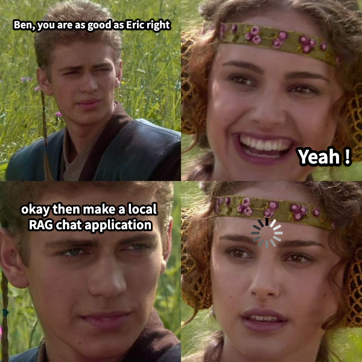
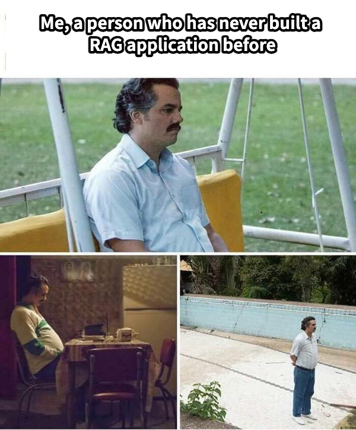

A fully-local, RAG-enabled AI chat application
— runs on my laptop, no cloud, 6K context.

This role came through Eric's referral. When Justin called, it felt exactly like this:

I knew the pieces — an embedding model, a retrieval step, a vector store.
But I had never actually built one. So I didn't know the real troubles that only show up in implementation:
A route only: parse request → call service → stream. Zero business logic.
RagService wires the components in the right order. The "heart."
Chunker, Embedder, VectorStore, LLMClient — each does one thing.
Backend: FastAPI · NumPy · langchain-text-splitters · Frontend: pure HTML / CSS / JavaScript (no framework)
load_documents(.md/.txt)
↓
chunk_documents()
MarkdownHeaderTextSplitter ← headers → citation
RecursiveCharacterTextSplitter ← split if oversized
↓
embed_documents() → 768-d vectors
↓
store.add() + save()search_document: vs search_query:.content delta per line.prompt_eval_count → I verify my token estimate against it.Both hidden behind Embedder / LLMClient Protocols — the rest of the app never imports httpx.
answer(): the conductortrim_history → fit 6K
condense_question → standalone
retrieve → hits
build_messages → messages, kept
build_options → num_ctx/keep
yield {sources} ← metadata
for token in chat_stream:
yield {token} ← streamedraise, not assert.StreamingResponse(sse())
data: {json}\n\n ← SSE frame
fetch(POST).body.getReader()
buffer += decode(chunk)
buffer.split("\n\n")
buffer = events.pop() ← keep tail
switch(msg.type):
token → bubble += text
sources→ n → breadcrumbEventSource — SSE-over-POST needs a body.json.dumps is a newline guard: escapes \n inside a token so it can't fake an event boundary.[1]; client resolves it to a full source footnote — citations never enter history.A prohibition-heavy prompt made it say “I don't know” even with the answer present. Fix: lead with the positive instruction.
Reframing arbitrary byte chunks into whole SSE events — the buffer/pop dance.
No local tokenizer endpoint → estimate with chars/token, then reconcile against prompt_eval_count (I run ~6% over, the safe side).
Running locally — http://localhost:8000